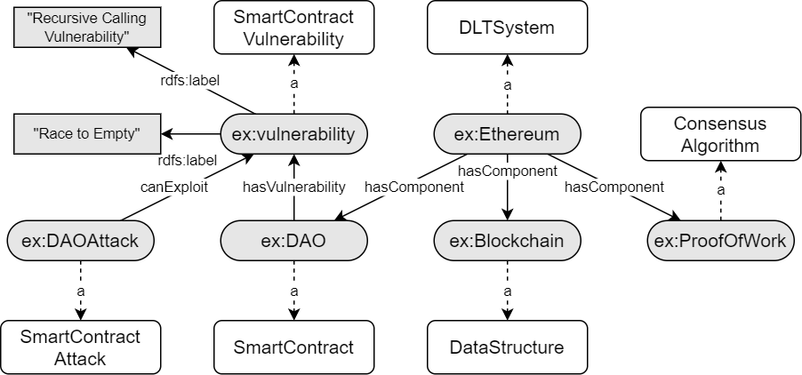
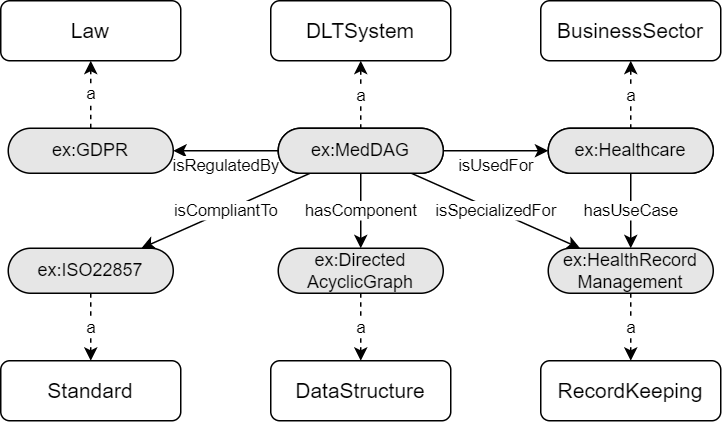

A Knowledge Graph of Distributed Ledger Technologies
Availability and Downloads
- Download DLT Ontology:


- Download Knowledge Graph:
- License:

- Ressource DOI:

Ontology Concepts and Relations
- DLTSystem and DLTComponent describe the essential parts of a DLT system;
- Vulnerability and Attack connect potential security aspects of the system;
- UseCase, and BusinessSector link existing applications of the described systems.
Ontology Metrics
- Ontologies
- 1
- Triples
- 571
- Classes
- 115
- Properties
- 15
- Object Properties
- 14
Namespaces
- :
- https://w3id.org/DLTOntology#
- dc
- http://purl.org/dc/elements/1.1/
- owl
- http://www.w3.org/2002/07/owl#
- rdf
- http://www.w3.org/1999/02/22-rdf-syntax-ns#
- rdfs
- http://www.w3.org/2000/01/rdf-schema#
- sh
- http://www.w3.org/ns/shacl#
- skos
- http://www.w3.org/2004/02/skos/core#
- vann
- http://purl.org/vocab/vann/
- void
- http://rdfs.org/ns/void#
- xml
- http://www.w3.org/XML/1998/namespace
- xsd
- http://www.w3.org/2001/XMLSchema#
Abstract
Distributed ledger systems have become more prominent and successful in recent years, with a focus on blockchains and cryptocurrency. This has led to various misunderstandings about both the technology itself and its capabilities, as in many cases these two became synonymous and other applications are often overlooked. Therefore, as a whole, the view of distributed ledger technology beyond blockchains and cryptocurrencies is very limited. Existing vocabularies and ontologies often focus on single aspects of the technology, or in some cases even just on one product. This potentially leads to other types of distributed ledgers and their possible use cases being neglected. This knowledge graph builds on an ontology for distributed ledger technologies, which includes concepts to model security aspects such as technical threats and vulnerabilities of distributed ledger systems, application domains, as well as relevant standards and regulations.
Competency Questions
T - Technology and Security involves questions regarding the components of a DLT system, as well as technical threats and vulnerabilities of systems and components.I - Industry and Application involves questions about applications, business sectors, and use cases of DLT systems.S - Standardization and Regulation involves questions about standards, technical controls, standardization organizations, and relevant laws.
PREFIX : <https://w3id.org/DLTOntology#>
- T1
- Which components are part of the distributed ledger system?
- T2
- Which technical threats have to be considered regarding the consensus algorithm of the system?
- T3
- What are known smart contract vulnerabilities?
- T4
- What are the data structures of the system?
- T5
- Which types of DLT attacks could be used against a system or its components?
- I1
- Which use cases can be realised with distributed ledger technology?
- I2
- Which industries could use distributed ledger systems?
- I3
- Which distributed ledger systems are used for public transportation and smart cars?
- I4
- Which types of record keeping could be realized with distributed ledger technology?
- S1
- Which standardization organizations are active in regards to distributed ledger technology?
- S2
- Which normative references do exists for distributed ledger systems?
- S3
- Which industry standards do exist?
- S4
- What are relevant laws in regards to distributed ledger systems?
- S5
- What are organizational controls and mitigations for a distributed ledger system and/or component?
- S6
- Is there an industry initiative that directs and regulates the used distributed ledger system?
SELECT ?component ?dltsystem WHERE {
?dltsystem a :DLTSystem ;
:hasComponent ?component .
}
SELECT ?threat WHERE {
?threat :threatens [ a :ConsensusAlgorithm ]
}
SELECT ?vulnerability WHERE {
?vulnerability a :SmartContractVulnerability .
}
SELECT ?dltsystem ?datastructure WHERE {
?dltsystem a :DLTSystem ;
:hasComponent ?datastructure .
?datastructure a :DataStructure .
}
SELECT ?component ?vulnerability WHERE {
?component :hasVulnerability ?vulnerability .
}
SELECT ?dltsystem ?usecase WHERE {
?dltsystem :isSpecializedFor ?usecase .
}
SELECT ?industry ?dltsystem WHERE {
?industry a :IndustryInitiative ;
:comesFrom ?businessSector .
?dltsystem :isUsedFor ?businessSector .
}
SELECT ?dltsystem WHERE {
?dltsystem :isUsedFor [ a :PublicTransportation ] .
?dltsystem :isUsedFor [ a :SmartCars ] .
}
SELECT ?dltsystem ?usecase WHERE {
?dltsystem :isSpecializedFor ?usecase .
?usecase a :RecordKeeping .
}
SELECT ?stdorga ?standard WHERE { ?stdorga a :StandardizationOrganization ; :creates ?standard . ?dltsystem :compliantTo ?standard . }
SELECT ?standard ?dltsystem WHERE {
?dltsystem :compliantTo ?standard .
?standard a :NormativeStandard .
}
SELECT ?standard WHERE { ?standard a :IndustryStandard . }
SELECT ?law ?dltsystem WHERE {
?dltsystem :isRegulatedBy ?law .
?law a :Law .
}
SELECT ?control ?dltsystem WHERE {
?control :controls ?dltsystem ;
a :OrganizationalControl .
}
SELECT ?mitigation ?component WHERE {
?mitigation :mitigates ?component ;
a :DLTComponent .
}
SELECT ?initiative ?dltsystem WHERE {
?dltsystem :isCompliantTo ?standard .
?initiative a :IndustryInitiative ;
:creates ?standard .
}
Knowledge Graph
The Knowledge Graph uses the DLT Ontology, and consists named entities from three sectors: (i) standards and legal authorities, (ii) technical details, vulnerabilities and security aspects, and (iii) use cases and business sectors. Two example scenarios are used to illustrate these contents.
The following table lists the number of entities for the core classes:
| Triples | Std. | Std.Org. | Comp. | UseC. | B.Sec. | Vuln. | Attack |
|---|---|---|---|---|---|---|---|
| 746 | 18 | 8 | 9 | 55 | 9 | 7 | 11 |
- Example 1 - Vulnerabilities and Attacks
-
Example No. 1 models the connection of vulnerabilities and attacks on a distributed ledger system on the basis of the infamous DAO attack on the Ethereum blockchain. The DAO (Decentralized Autonomous Organization) was an open-source project running on Ethereum, maintained by a smart contract, and served as a venture capital fund. An attacker was able to siphon off a large sum of the invested capital due to an existing vulnerability.
We model DAO as a Smart Contract, which is a component of the Ethereum system. In our example, Ethereum also has a Blockchain and a Proof-of-Work consensus algorithm as components. The DAO Smart Contract has a vulnerability (modeled as "SmartContractVulnerability"); which has been be exploited by the DAO attack (modeled as "SmartContractcAttack").
- Example 2 - Use case, business sector and DLT standard
-
Example No. 2 is a scenario in which a distributed ledger system is used in the medical field. Traditional blockchains have issues with scalability and transaction fees. Using a directed acyclic graph can overcome many shortcomings of a regular blockchain. Using such a system to keep track of patient data, adhering to regulations becomes exceptionally important. Besides the General Data Protection Regulation there are specialized laws and standardisation for the medical field, for example the ISO 22857.
We model this example scenario as a DLT System which has a directed acyclic graph (DAG) component. The DAG in this example is regulated by the GDPR, and compliant to the ISO standard.